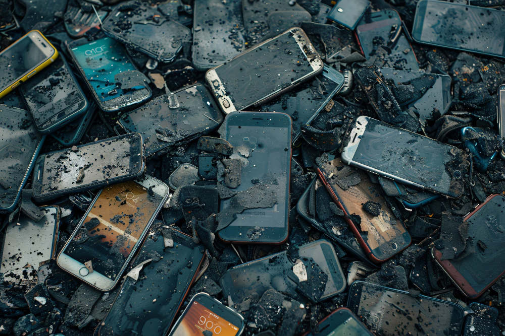

Afinal, o que é Lixo Eletrônico?

Computadores antigos, celulares quebrados, televisões velhas, aquele MP3 guardado. Precisa de energia elétrica (tomada, bateria ou pilha) para funcionar? Então é considerado lixo eletrônico.